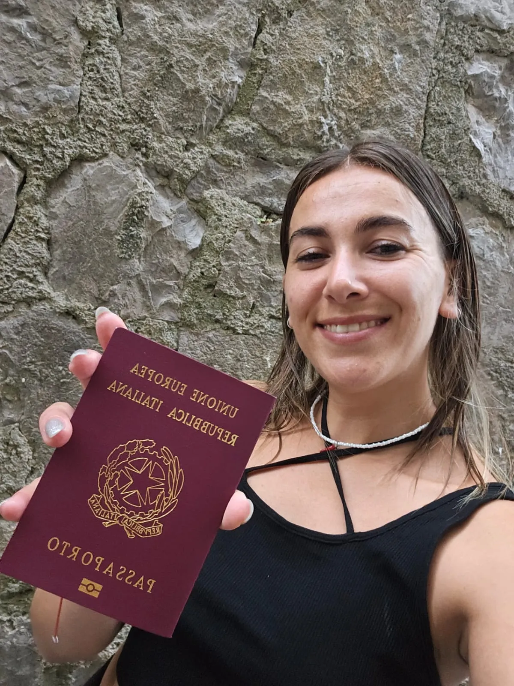
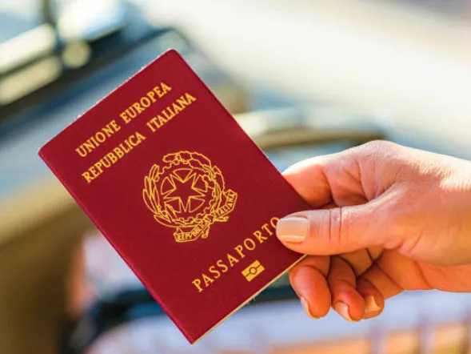

The easiest way to obtain your Italian Citizenship through descent.
Our Dual Italian Citizenship Services
We specialize in Italian citizenship by descent. We offer guidance, full-service, and
custom packages to help you secure dual Italian citizenship at your price point.

“Everything was taken care of! Translating the documents,
certifying each document, and assembling the file to request
citizenship. This made the process of getting my dual
Italian citizenship easy and hassle free.”
Muriel Comini
Customer & Dual Italian Citizen
Important Update:
Due to new generational limits introduced on March, 28th 2025, you can now only obtain citizenship through an Italian-born grandparent or parent, or if your parent lived in Italy for at least two years prior to your birth.
Why we're easier
We can handle every aspect of the process for you — lineage tracing, document gathering, translation, legalization, and
completing the consulate package or representing you in Italian court. Keeping you informed every
step of the way as we secure your dual Italian citizenship.
Our Services
Genealogical Research: Tracing and verifying family lineage.
Document Procurement: Obtaining required certificates and records.
Document Processing: Includes translation, legalization, Apostille, and notarization.
Consulate & Court Package Assembly: Preparing complete application packages for consulates or Italian courts.
Consulate Booking: Assist with the scheduling of appointments at the Italian consulate.
Italian Court Representation: Providing legal representation in Italian courts.
U.S. Document Amendments (OATS): We’ve partnered with law firms across the U.S. to resolve discrepancies in names and dates of birth, ensuring documents meet Italian legal requirements.
Three Easy Steps
Inital Call & Walkthrough
Schedule a meeting with one of our Italian citizenship experts to review your case, and we’ll guide you through the process of submitting your documents for our team to review.
Free Review & Consultation
We’ll review your documents, confirm your eligibility for Italian citizenship by descent (Jure Sanguinis), and inform you if any additional documents or steps are needed for a successful submission.
Wait for your citizenship
Our team will initiate the citizenship process, keep you updated on the progress, and notify you once your application has been completed and your right to an Italian Passport has been secured.
“The process moved quickly and at each step Aldo and his team took
the time to explain the details to me. I
recommend these services to anyone looking for professional and
effective support for obtaining Italian citizenship.”
Eugenio Batch
Customer & Dual Italian Citizen
How an Italian court case works
If you can’t schedule an appointment with your Italian
Consulate, or have a more complexed legal case, you're eligible to have one of our lawyers
obtain your citizenship through the Italian courts.

Discover if you're elgible now
Try our quick and easy eligibility tool to find out instantly
if you may qualify for an Italian citizenship.
“I specialized in the recognition of Italian citizenship (Jure Sanguinis) because It's deeply personal to me.
My family faced the challenges of migration
first-hand when they returned to Italy from Argentina. This has driven me to help
countless families reclaim their Italian heritage and citizenship through lineage.”
Aldo Ponte
Head of Citizenship Procurement
Frequently Asked Questions
What are the new laws governing Italian citizenship by descent?
Due to new generational limits, you can now only obtain citizenship through an Italian-born grandparent or parent, or if your parent lived in Italy for at least two years prior to your birth.
What is Jure Sanguinis?
Jure Sanguinis is the Italian law that allows descendants of Italian citizens to reclaim their citizenship by proving uninterrupted lineage. If your ancestor never renounced their Italian citizenship and meets certain legal criteria, you may be eligible for Italian citizenship by descent.
Who is eligible for Italian citizenship through Jure Sanguinis?
You may be eligible if:
You have an Italian parent(s) or grandparent(s) who was born in Italy.
Your Italian parent(s) or grandparent(s) never became a U.S. Citizen.
Your Italian parent(s) or grandparent(s) became a U.S. citizen after their child (parent or you) was 21 years of age or older.
Your Italian parent(s) or grandparent(s) became a U.S. citizen after August 15, 1992.
Due to new generational limits, you can now only obtain citizenship through an Italian-born grandparent or parent, or if your parent lived in Italy for at least two years prior to your birth.
What documents do I need to apply for Jure Sanguinis?
To apply for Italian citizenship by descent, you generally need:
Birth, marriage, and death certificates of your Italian ancestor.
Birth, marriage, and death certificates of any direct ancestors in the Italian lineage (your mother/father, grandparent).
Your own birth and marriage certificates.
Proof that your Italian ancestor did not renounce citizenship before the birth of the next descendant, they naturalized after the next descendant was 21 years or oldern or they naturalized after August 15, 1992.
Can I apply through the Italian consulate or can I go through the quicker route which is Italian court?
If you're eligible for Italian citizenship by descent, you can apply either
through your local Italian consulate or, if you are unable to secure an appointement,
you can hire an Italian Lawyer to apply on your behalf via the Italian court system.
Consulates can take several years to process applications due to high demand,
while court proceedings typically take 1 - 2 years.
How must foreign documents be processed for the Italian citizenship application?
To be accepted in Italian court or by a consulate, foreign documents must go through these steps:
Apostille Authentication: Documents like birth, marriage, and naturalization certificates must be apostilled, confirming their validity for international use.
Translation into Italian: Documents must be translated into Italian by a certified translator. For court submissions, translations must be sworn and certified.
Certification of Translations: Translations may need certification by a public notary or consulate, depending on the location of the application.
Legalization (if needed): If the country is not part of the Hague Convention, documents will require legalization by the foreign ministry and the Italian consulate.
Consulate-Specific Requirements: The requirements may vary by consulate. Some consulates may require additional documents, notarization, additional certification, or specific formatting for documents. It’s important to consult with us to ensure your documents meet the correct standards.
What if I don’t have all the required documents or they have not been processed?
Citizenship Italia’s document procurement team can secure and process the necessary documents as
quickly as possible. Your application will require official records from your
local government and the Italian authorities. Missing, unprocessed, or improperly processed documents will cause delays.
Can multiple family members apply together for Italian citizenship?
Yes, family members who share the same Italian ancestor can apply together. This can help streamline the process and reduce costs, as many documents will be shared.
How long does the Jure Sanguinis process take?
The timeline depends on whether you apply through a consulate or the court. Consular applications can take several years, while the court process in Italy generally takes 1-2 years, especially for 1948 cases or complex cases.
What is a 1948 Case?
A 1948 case allows children born to an Italian mother prior to 1948 to claim Italian dual
citizenship through the Courts in Italy and cannot be applied for through administrative means.
Can I still apply for Italian citizenship if my ancestor naturalized in another country?
Yes, but with conditions. Your ancestor must have naturalized, or became a citizen of the new country
after the birth of the next person in your lineage (i.e., your parent or grandparent). If they renounced
their Italian citizenship before their child was born, your eligibility may be affected.
Can I apply for Jure Sanguinis if I was adopted?
Yes, if you were legally adopted by an Italian citizen, you may be eligible for Italian citizenship.
What are the benefits of Italian dual citizenship?
With Italian citizenship, you gain:
The ability to live, work, and study anywhere in the European Union.
Access to Italian healthcare and social services.
The right to own property and do business in Italy.
Visa-free or visa-on-arrival access to over 180 countries with an Italian passport.